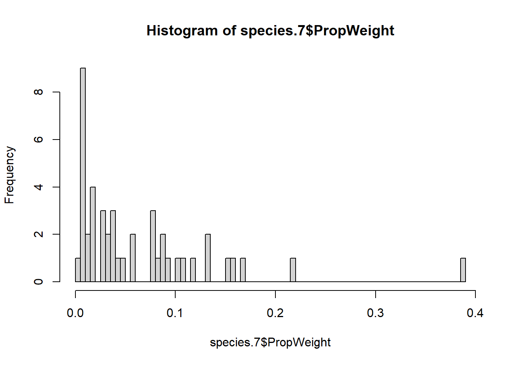

8 Non-parametric Tests
8.1 Top 10 discard species weight prop
8.1.1 Data Modifications
# Names to remove
Remove <- c("Multiple species finfish", "Multiple species prawns", "Xiphopenaeus kroyeri")
# Data
Top10Species <- ObserverData %>%
group_by(LatinNames, CommonName) %>%
dplyr::summarise(NoSampled = n(),
.groups = 'drop') %>%
filter(NoSampled >= 10) %>%
filter(!LatinNames %in% Remove) %>%
arrange(desc(NoSampled)) %>%
head(10)
# Creating a vector of names
Top10names <- Top10Species$LatinNames
# Filtering data to keep species
FilteredSpecies <- ObserverData %>%
filter(LatinNames %in% Top10names) %>%
group_by(DragID2) %>%
mutate(PropWeight = CpueKGHR/sum(CpueKGHR)) %>%
ungroup() %>%
dplyr::select(LatinNames,
DragID2,
PropWeight,
Company,
Month,
TimePeriods,
FishingZones,
FishingDepthMtr)
# Converting variables to factors
factor.var <- c("Company",
"Month",
"TimePeriods",
"FishingZones")
FilteredSpecies[,factor.var] <- lapply(FilteredSpecies[,factor.var], factor)
# Removing fishing zones 2 and 5
drop.zones <- c(2, 5)
FilteredSpecies <- FilteredSpecies %>%
filter(!FishingZones %in% drop.zones)
names(ObserverData) [1] "Company" "Departure" "Arrival" "DaysAtSea"
[5] "TripID" "DragID" "DragID2" "DragDate"
[9] "Day" "Month" "Year" "FishingZones"
[13] "TimePeriods" "DragStart" "DragEnd" "TimeFishedHrs"
[17] "TimeFishedDec" "FishingDepthFtm" "FishingDepth2" "SpeciesID"
[21] "EconomicStatus" "OrderTax" "FamilyTax" "ClassTax"
[25] "CatchCategory" "SpeciesCategory" "SpeciesCategory2" "SpeciesCategory3"
[29] "LatinNames" "AplhaCode" "CommonName" "SampleWeightLB"
[33] "TotalWeightLB" "SampleWeightKG" "TotalWeightKG" "CpueKGHR"
[37] "FishingDepthMtr"8.1.2 Macrodon ancylodon
species.1 <- FilteredSpecies %>%
filter(LatinNames == Top10names[1]) %>%
# select(-DragID2) %>%
dplyr::select(-LatinNames)
# Histograms
bks <- c(10, 30, 50, 100, 500, 1000)
for (i in bks){
hist(species.1$PropWeight, breaks = i)
} 
Company n mean sd min Q1 median Q3
1 NHS 22 0.2071163 0.1470236 0.0094137 0.0709509 0.2192721 0.3051123
2 PSI 23 0.1687639 0.1296192 0.0256597 0.0854636 0.1231765 0.2533709
max
1 0.5729614
2 0.5507618
Kruskal-Wallis rank sum test
data: PropWeight by Company
Kruskal-Wallis chi-squared = 0.74446, df = 1, p-value = 0.3882# Independent variable 2
## Summary statistics
Summarize(PropWeight ~ TimePeriods,
data = species.1) TimePeriods n mean sd min Q1 median Q3
1 Day 22 0.1978629 0.1331072 0.0458101 0.0892064 0.1740991 0.2782299
2 Night 23 0.1776150 0.1451365 0.0094137 0.0647699 0.1231765 0.2715389
max
1 0.5729614
2 0.5507618
Kruskal-Wallis rank sum test
data: PropWeight by TimePeriods
Kruskal-Wallis chi-squared = 0.56144, df = 1, p-value = 0.4537 Month n mean sd min Q1 median Q3
1 2 12 0.1600454 0.1303423 0.0094137 0.0618617 0.1210011 0.2489424
2 3 5 0.1379701 0.1167758 0.0458101 0.0480030 0.0691096 0.2341415
3 4 6 0.0890222 0.0358269 0.0256597 0.0847005 0.0901956 0.1080062
4 6 6 0.3027609 0.1565006 0.0875426 0.2237401 0.3042338 0.3557217
5 8 5 0.2566170 0.2177127 0.0273553 0.0878080 0.2468617 0.3480987
6 9 5 0.2705858 0.0679669 0.1790023 0.2554444 0.2704775 0.2784254
7 10 6 0.1401701 0.0783173 0.0480544 0.1024749 0.1252763 0.1587409
max
1 0.3775788
2 0.2927865
3 0.1312706
4 0.5507618
5 0.5729614
6 0.3695794
7 0.2776435
Kruskal-Wallis rank sum test
data: PropWeight by Month
Kruskal-Wallis chi-squared = 10.872, df = 6, p-value = 0.09241# Independent variable 4
## Summary statistics
Summarize(PropWeight ~ FishingZones,
data = species.1) FishingZones n mean sd min Q1 median Q3
1 4 5 0.1379701 0.1167758 0.0458101 0.0480030 0.0691096 0.2341415
2 6 22 0.1852153 0.1356633 0.0094137 0.0897496 0.1567322 0.2667193
3 7 8 0.1934395 0.1371303 0.0159696 0.0863841 0.1712805 0.3201724
4 8 10 0.2126027 0.1661525 0.0256597 0.0871280 0.1601639 0.3200506
max
1 0.2927865
2 0.5729614
3 0.3775788
4 0.5507618
Kruskal-Wallis rank sum test
data: PropWeight by FishingZones
Kruskal-Wallis chi-squared = 1.1137, df = 3, p-value = 0.7738# Independent variable 5
## Summary statistics
Summarize(PropWeight ~ as.factor(FishingDepthMtr),
data = species.1) as.factor(FishingDepthMtr) n mean sd min Q1
1 9 3 0.1760654 0.0879943 0.1231765 0.1252763
2 13 7 0.2555480 0.0968771 0.0878080 0.2172233
3 15 6 0.1933338 0.2028679 0.0273553 0.0599344
4 16 6 0.1798902 0.1925483 0.0256597 0.0699034
5 18 16 0.1312832 0.1056814 0.0094137 0.0531179
6 20 3 0.3513089 0.0331900 0.3140080 0.3381739
7 22 4 0.1818237 0.1195379 0.0839374 0.0910354
median Q3 max
1 0.1273762 0.2025098 0.2776435
2 0.2704775 0.3132621 0.3695794
3 0.1323851 0.2274453 0.5729614
4 0.1156292 0.1916571 0.5507618
5 0.0926382 0.2289758 0.3358673
6 0.3623398 0.3699593 0.3775788
7 0.1523459 0.2431342 0.3386657# Plotting data
histogram(~ PropWeight | as.factor(FishingDepthMtr),
data = species.1,
layout=c(3,3)) ## Non-parametric test
(ma.an.5 <- kruskal.test(PropWeight ~ as.factor(FishingDepthMtr),
data = species.1))
Kruskal-Wallis rank sum test
data: PropWeight by as.factor(FishingDepthMtr)
Kruskal-Wallis chi-squared = 11.492, df = 6, p-value = 0.07438.1.3 Callinectes ornatus
species.2 <- FilteredSpecies %>%
filter(LatinNames == Top10names[2]) %>%
dplyr::select(-LatinNames)
# Histograms
for (i in bks){
hist(species.2$PropWeight, breaks = i)
} Company n mean sd min Q1 median Q3
1 NHS 22 0.0186620 0.0355964 0.0001184 0.0037138 0.0067620 0.0134906
2 PSI 23 0.0642815 0.1658291 0.0035868 0.0065538 0.0137058 0.0482352
max
1 0.1461942
2 0.8067834
Kruskal-Wallis rank sum test
data: PropWeight by Company
Kruskal-Wallis chi-squared = 4.9514, df = 1, p-value = 0.02607# Independent variable 2
## Summary statistics
Summarize(PropWeight ~ TimePeriods,
data = species.2) TimePeriods n mean sd min Q1 median Q3
1 Day 22 0.0239210 0.0356488 0.0004681 0.0043591 0.0102452 0.0206051
2 Night 23 0.0592512 0.1670971 0.0001184 0.0048261 0.0084501 0.0320243
max
1 0.1461942
2 0.8067834
Kruskal-Wallis rank sum test
data: PropWeight by TimePeriods
Kruskal-Wallis chi-squared = 0.025262, df = 1, p-value = 0.8737 Month n mean sd min Q1 median Q3
1 2 12 0.0197769 0.0405734 0.0001184 0.0033144 0.0062994 0.0137863
2 3 5 0.1743231 0.3537595 0.0035868 0.0116127 0.0137058 0.0359266
3 4 6 0.0214525 0.0345538 0.0038252 0.0054351 0.0069928 0.0125327
4 6 6 0.0692764 0.0425613 0.0218451 0.0444221 0.0596516 0.0850036
5 8 5 0.0271314 0.0424231 0.0022040 0.0079986 0.0090539 0.0137364
6 9 5 0.0075170 0.0087676 0.0004681 0.0039669 0.0044140 0.0059509
7 10 6 0.0104142 0.0072492 0.0046496 0.0056450 0.0082250 0.0114634
max
1 0.1461942
2 0.8067834
3 0.0916090
4 0.1417103
5 0.1026642
6 0.0227851
7 0.0240579
Kruskal-Wallis rank sum test
data: PropWeight by Month
Kruskal-Wallis chi-squared = 12.868, df = 6, p-value = 0.04518# Independent variable 4
## Summary statistics
Summarize(PropWeight ~ FishingZones,
data = species.2) FishingZones n mean sd min Q1 median Q3
1 4 5 0.1743231 0.3537595 0.0035868 0.0116127 0.0137058 0.0359266
2 6 22 0.0193693 0.0354492 0.0001184 0.0042695 0.0077853 0.0133836
3 7 8 0.0070358 0.0052183 0.0023188 0.0034612 0.0052806 0.0088682
4 8 10 0.0535013 0.0446151 0.0054016 0.0158814 0.0482352 0.0845672
max
1 0.8067834
2 0.1461942
3 0.0168851
4 0.1417103
Kruskal-Wallis rank sum test
data: PropWeight by FishingZones
Kruskal-Wallis chi-squared = 11.336, df = 3, p-value = 0.01004# Independent variable 5
## Summary statistics
Summarize(PropWeight ~ as.factor(FishingDepthMtr),
data = species.2) as.factor(FishingDepthMtr) n mean sd min Q1
1 9 3 0.0083000 0.0037152 0.0050026 0.0062873
2 13 7 0.0219979 0.0363576 0.0004681 0.0041905
3 15 6 0.0094736 0.0076358 0.0022040 0.0054868
4 16 6 0.0349706 0.0347798 0.0036294 0.0066394
5 18 16 0.0861306 0.1981330 0.0001184 0.0070638
6 20 3 0.0088444 0.0112589 0.0023188 0.0023441
7 22 4 0.0097163 0.0061627 0.0038252 0.0050075
median Q3 max
1 0.0075721 0.0099487 0.0123253
2 0.0059509 0.0182607 0.1026642
3 0.0084382 0.0090099 0.0240579
4 0.0272512 0.0520484 0.0916090
5 0.0126593 0.0706289 0.8067834
6 0.0023694 0.0121072 0.0218451
7 0.0090775 0.0137863 0.0168851# Plotting data
histogram(~ PropWeight | as.factor(FishingDepthMtr),
data = species.2,
layout=c(3,3)) ## Non-parametric test
(ca.or.5 <- kruskal.test(PropWeight ~ as.factor(FishingDepthMtr),
data = species.2))
Kruskal-Wallis rank sum test
data: PropWeight by as.factor(FishingDepthMtr)
Kruskal-Wallis chi-squared = 4.8875, df = 6, p-value = 0.55838.1.4 Stellifer rastrifer
species.3 <- FilteredSpecies %>%
filter(LatinNames == Top10names[3]) %>%
dplyr::select(-LatinNames)
# Histograms
for (i in bks){
hist(species.3$PropWeight, breaks = i)
} Company n mean sd min Q1 median Q3
1 NHS 22 0.3124365 0.1544111 0.0754837 0.2050820 0.2986427 0.3863003
2 PSI 23 0.2062252 0.1610102 0.0061162 0.0769284 0.2053203 0.3100671
max
1 0.6586265
2 0.5805275
Kruskal-Wallis rank sum test
data: PropWeight by Company
Kruskal-Wallis chi-squared = 4.2693, df = 1, p-value = 0.03881# Independent variable 2
## Summary statistics
Summarize(PropWeight ~ TimePeriods,
data = species.3) TimePeriods n mean sd min Q1 median Q3
1 Day 22 0.2766888 0.1735309 0.0426972 0.1307328 0.2473404 0.3958579
2 Night 23 0.2404187 0.1582167 0.0061162 0.0825332 0.2702225 0.3089540
max
1 0.6586265
2 0.6312845
Kruskal-Wallis rank sum test
data: PropWeight by TimePeriods
Kruskal-Wallis chi-squared = 0.52793, df = 1, p-value = 0.4675 Month n mean sd min Q1 median Q3
1 2 12 0.3070113 0.1154663 0.0754837 0.2542534 0.3019809 0.3723178
2 3 5 0.2336681 0.2514963 0.0061162 0.0756718 0.0868814 0.4191433
3 4 6 0.2628480 0.1080874 0.0927637 0.2211504 0.2638463 0.3223930
4 6 6 0.1085670 0.1130332 0.0426972 0.0514023 0.0691259 0.0833663
5 8 5 0.4249478 0.2270068 0.1800626 0.2050287 0.4497368 0.6312845
6 9 5 0.2129458 0.0932391 0.0914846 0.1624304 0.1995824 0.2980185
7 10 6 0.2243915 0.1502203 0.0283279 0.1414553 0.2288618 0.2657677
max
1 0.5429702
2 0.5805275
3 0.4078043
4 0.3368454
5 0.6586265
6 0.3132131
7 0.4699077
Kruskal-Wallis rank sum test
data: PropWeight by Month
Kruskal-Wallis chi-squared = 10.556, df = 6, p-value = 0.1031# Independent variable 4
## Summary statistics
Summarize(PropWeight ~ FishingZones,
data = species.3) FishingZones n mean sd min Q1 median Q3
1 4 5 0.2336681 0.2514963 0.0061162 0.0756718 0.0868814 0.4191433
2 6 22 0.2947373 0.1572169 0.0283279 0.2009439 0.2841205 0.3544720
3 7 8 0.2588465 0.1532004 0.0754837 0.1771224 0.2389038 0.3107326
4 8 10 0.1893448 0.1421008 0.0426972 0.0645964 0.1496007 0.3223930
max
1 0.5805275
2 0.6586265
3 0.5429702
4 0.4078043
Kruskal-Wallis rank sum test
data: PropWeight by FishingZones
Kruskal-Wallis chi-squared = 2.7668, df = 3, p-value = 0.429# Independent variable 5
## Summary statistics
Summarize(PropWeight ~ as.factor(FishingDepthMtr),
data = species.3) as.factor(FishingDepthMtr) n mean sd min Q1
1 9 3 0.2426487 0.0335326 0.2053203 0.2288618
2 13 7 0.2754835 0.1853337 0.0914846 0.1810064
3 15 6 0.3132478 0.2368615 0.0283279 0.1351409
4 16 6 0.2435458 0.1381321 0.0600668 0.1351738
5 18 16 0.2725359 0.1746115 0.0061162 0.0847073
6 20 3 0.1179037 0.1031781 0.0426972 0.0590905
7 22 4 0.2263513 0.1242447 0.0927637 0.1771224
median Q3 max
1 0.2524033 0.2613129 0.2702225
2 0.2050287 0.3056158 0.6586265
3 0.3148997 0.4648650 0.6312845
4 0.2923410 0.3258560 0.3967134
5 0.2939539 0.3759460 0.5805275
6 0.0754837 0.1555069 0.2355302
7 0.2096750 0.2589039 0.3932916# Plotting data
histogram(~ PropWeight | as.factor(FishingDepthMtr),
data = species.3,
layout=c(3,3)) ## Non-parametric test
(st.ra.5 <- kruskal.test(PropWeight ~ as.factor(FishingDepthMtr),
data = species.3))
Kruskal-Wallis rank sum test
data: PropWeight by as.factor(FishingDepthMtr)
Kruskal-Wallis chi-squared = 3.5471, df = 6, p-value = 0.73778.1.5 Stellifer microps
species.4 <- FilteredSpecies %>%
filter(LatinNames == Top10names[4]) %>%
dplyr::select(-LatinNames)
species.4 <- rbind(species.4, species.1[c(17,41,45),]) # Copying row from species.one
species.4[c(43,44,45),2] = 0.01 # changing value to '0'
species.4 <- species.4 %>%
arrange(DragID2) %>%
dplyr::select(-DragID2)
# Histograms
for (i in bks){
hist(species.4$PropWeight, breaks = i)
} Company n mean sd min Q1 median Q3 max
1 NHS 22 0.1609199 0.0885732 0.01 0.0979475 0.1549264 0.2188195 0.3405926
2 PSI 23 0.2573168 0.1614699 0.01 0.1484958 0.1881188 0.3853821 0.6164112
Kruskal-Wallis rank sum test
data: PropWeight by Company
Kruskal-Wallis chi-squared = 3.7258, df = 1, p-value = 0.05358# Independent variable 2
## Summary statistics
Summarize(PropWeight ~ TimePeriods,
data = species.4) TimePeriods n mean sd min Q1 median Q3
1 Day 22 0.1955182 0.1273408 0.01 0.1068409 0.1598698 0.2471974
2 Night 23 0.2242228 0.1497025 0.01 0.1432627 0.1993240 0.2969250
max
1 0.4807905
2 0.6164112
Kruskal-Wallis rank sum test
data: PropWeight by TimePeriods
Kruskal-Wallis chi-squared = 0.66833, df = 1, p-value = 0.4136 Month n mean sd min Q1 median Q3
1 2 12 0.1638425 0.0943944 0.0100000 0.0946831 0.1794297 0.2284874
2 3 5 0.1478770 0.0878349 0.0330831 0.0925140 0.1650912 0.1881188
3 4 6 0.3303560 0.1633592 0.0100000 0.3435476 0.3813947 0.4002952
4 6 6 0.2138701 0.1410429 0.0617597 0.1247382 0.1634544 0.3251255
5 8 5 0.1320475 0.0734586 0.0381388 0.1031876 0.1371347 0.1409757
6 9 5 0.1827780 0.0980971 0.0795565 0.1392126 0.1552043 0.1993240
7 10 6 0.3189241 0.1917535 0.1514419 0.1702115 0.2503069 0.4387503
max
1 0.2812202
2 0.2605779
3 0.4718194
4 0.4037031
5 0.2408009
6 0.3405926
7 0.6164112
Kruskal-Wallis rank sum test
data: PropWeight by Month
Kruskal-Wallis chi-squared = 9.1339, df = 6, p-value = 0.1662# Independent variable 4
## Summary statistics
Summarize(PropWeight ~ FishingZones,
data = species.4) FishingZones n mean sd min Q1 median Q3
1 4 5 0.1478770 0.0878349 0.0330831 0.0925140 0.1650912 0.1881188
2 6 22 0.2045195 0.1355136 0.0381388 0.1376542 0.1597458 0.2353838
3 7 8 0.2110552 0.1402413 0.0100000 0.1438254 0.2372167 0.2877071
4 8 10 0.2531267 0.1666978 0.0100000 0.1247382 0.2732159 0.3941280
max
1 0.2605779
2 0.6164112
3 0.3977165
4 0.4718194
Kruskal-Wallis rank sum test
data: PropWeight by FishingZones
Kruskal-Wallis chi-squared = 1.5314, df = 3, p-value = 0.675# Independent variable 5
## Summary statistics
Summarize(PropWeight ~ as.factor(FishingDepthMtr),
data = species.4) as.factor(FishingDepthMtr) n mean sd min Q1
1 9 3 0.2094531 0.0895843 0.1514419 0.1578646
2 13 7 0.1654362 0.0860901 0.0795565 0.1212001
3 15 6 0.2835433 0.2201476 0.0381388 0.1498470
4 16 6 0.1401007 0.1395272 0.0100000 0.0688523
5 18 16 0.2337042 0.1102538 0.0330831 0.1624805
6 20 3 0.1054116 0.0898598 0.0100000 0.0639005
7 22 4 0.2686861 0.1940020 0.0100000 0.1949143
median Q3 max
1 0.1642874 0.2384586 0.3126299
2 0.1409757 0.1772641 0.3405926
3 0.2143924 0.4207931 0.6164112
4 0.0931654 0.1600695 0.4011547
5 0.2185067 0.3021834 0.4037031
6 0.1178010 0.1531174 0.1884338
7 0.2964624 0.3702342 0.4718194# Plotting data
histogram(~ PropWeight | as.factor(FishingDepthMtr),
data = species.4,
layout=c(3,3)) 
## Non-parametric test
(st.mi.5 <- kruskal.test(PropWeight ~ as.factor(FishingDepthMtr),
data = species.4))
Kruskal-Wallis rank sum test
data: PropWeight by as.factor(FishingDepthMtr)
Kruskal-Wallis chi-squared = 7.1499, df = 6, p-value = 0.30728.1.6 Cynoscion virescens
species.5 <- FilteredSpecies %>%
filter(LatinNames == Top10names[5]) %>%
dplyr::select(-LatinNames)
species.5 <- rbind(species.5, species.1[c(17,21,22,23),]) # Copying row from species.one
species.5[c(42,43,44,45),2] = 0.01 # changing value to '0'
species.5 <- species.5 %>%
arrange(DragID2) %>%
dplyr::select(-DragID2)
# Histograms
for (i in bks){
hist(species.5$PropWeight, breaks = i)
} 
Company n mean sd min Q1 median Q3
1 NHS 22 0.1372971 0.1186830 0.0004075 0.0478352 0.1063259 0.1940965
2 PSI 23 0.0753924 0.0755298 0.0020785 0.0219087 0.0433450 0.1083662
max
1 0.4066049
2 0.2564870
Kruskal-Wallis rank sum test
data: PropWeight by Company
Kruskal-Wallis chi-squared = 3.7273, df = 1, p-value = 0.05353# Independent variable 2
## Summary statistics
Summarize(PropWeight ~ TimePeriods,
data = species.5) TimePeriods n mean sd min Q1 median Q3
1 Day 22 0.0997837 0.0803733 0.0004075 0.0406929 0.0909730 0.1247085
2 Night 23 0.1112748 0.1219636 0.0025021 0.0231480 0.0702213 0.1540227
max
1 0.2564870
2 0.4066049
Kruskal-Wallis rank sum test
data: PropWeight by TimePeriods
Kruskal-Wallis chi-squared = 0.080608, df = 1, p-value = 0.7765 Month n mean sd min Q1 median Q3
1 2 12 0.1995727 0.1249062 0.0250248 0.1009817 0.1840926 0.2630707
2 3 5 0.0830163 0.0880577 0.0025021 0.0338174 0.0403257 0.1171144
3 4 6 0.0663885 0.0951055 0.0020785 0.0160188 0.0387102 0.0500953
4 6 6 0.0325332 0.0262900 0.0100000 0.0100000 0.0258973 0.0503361
5 8 5 0.0509495 0.0350302 0.0146666 0.0345712 0.0471489 0.0498942
6 9 5 0.0741833 0.0623256 0.0004075 0.0212712 0.0854351 0.1159949
7 10 6 0.1209023 0.0656986 0.0410330 0.0828011 0.1098925 0.1502199
max
1 0.4066049
2 0.2213218
3 0.2564870
4 0.0702213
5 0.1084665
6 0.1478079
7 0.2271629
Kruskal-Wallis rank sum test
data: PropWeight by Month
Kruskal-Wallis chi-squared = 16.153, df = 6, p-value = 0.01296# Independent variable 4
## Summary statistics
Summarize(PropWeight ~ FishingZones,
data = species.5) FishingZones n mean sd min Q1 median Q3
1 4 5 0.0830163 0.0880577 0.0025021 0.0338174 0.0403257 0.1171144
2 6 22 0.1086718 0.0799862 0.0004075 0.0478352 0.1019016 0.1424115
3 7 8 0.2068753 0.1468317 0.0250248 0.0787672 0.2204063 0.2904037
4 8 10 0.0293698 0.0240044 0.0020785 0.0100000 0.0220376 0.0497077
max
1 0.2213218
2 0.3421462
3 0.4066049
4 0.0702213
Kruskal-Wallis rank sum test
data: PropWeight by FishingZones
Kruskal-Wallis chi-squared = 13.104, df = 3, p-value = 0.004417# Independent variable 5
## Summary statistics
Summarize(PropWeight ~ as.factor(FishingDepthMtr),
data = species.5) as.factor(FishingDepthMtr) n mean sd min Q1
1 9 3 0.1151305 0.0986934 0.0410330 0.0591142
2 13 7 0.0600221 0.0566355 0.0004075 0.0179689
3 15 6 0.0975887 0.0433037 0.0471489 0.0623252
4 16 6 0.1006419 0.1265600 0.0020785 0.0207958
5 18 16 0.0944383 0.1069170 0.0025021 0.0212686
6 20 3 0.2174999 0.1827739 0.0417945 0.1229475
7 22 4 0.1590298 0.1026322 0.0523454 0.0810173
median Q3 max
1 0.0771955 0.1521792 0.2271629
2 0.0345712 0.1007150 0.1478079
3 0.1040423 0.1172419 0.1602376
4 0.0617023 0.1122221 0.3421462
5 0.0418354 0.1288570 0.3921536
6 0.2041004 0.3053526 0.4066049
7 0.1636434 0.2416559 0.2564870# Plotting data
histogram(~ PropWeight | as.factor(FishingDepthMtr),
data = species.5,
layout=c(3,3)) ## Non-parametric test
(cy.vi.5 <- kruskal.test(PropWeight ~ as.factor(FishingDepthMtr),
data = species.5))
Kruskal-Wallis rank sum test
data: PropWeight by as.factor(FishingDepthMtr)
Kruskal-Wallis chi-squared = 6.3748, df = 6, p-value = 0.38258.1.7 Symphurus plagusia
species.6 <- FilteredSpecies %>%
filter(LatinNames == Top10names[6]) %>%
dplyr::select(-LatinNames)
species.6 <- rbind(species.6, species.1[c(7,10,18,21),]) # Copying row from species.one
species.6[c(42,43,44,45),2] = 0.01 # changing value to '0'
species.6 <- species.6 %>%
arrange(DragID2) %>%
dplyr::select(-DragID2)
# Histograms
for (i in bks){
hist(species.6$PropWeight, breaks = i)
} 
Company n mean sd min Q1 median Q3
1 NHS 22 0.0138503 0.0156237 0.0002222 0.0028994 0.0097142 0.0174154
2 PSI 23 0.0572313 0.1286352 0.0007081 0.0096066 0.0120291 0.0355056
max
1 0.0622571
2 0.5948280
Kruskal-Wallis rank sum test
data: PropWeight by Company
Kruskal-Wallis chi-squared = 2.7492, df = 1, p-value = 0.0973# Independent variable 2
## Summary statistics
Summarize(PropWeight ~ TimePeriods,
data = species.6) TimePeriods n mean sd min Q1 median Q3
1 Day 22 0.0123716 0.0118482 0.0004033 0.0028994 0.0100000 0.0174154
2 Night 23 0.0586457 0.1285046 0.0002222 0.0093134 0.0145529 0.0377417
max
1 0.0392642
2 0.5948280
Kruskal-Wallis rank sum test
data: PropWeight by TimePeriods
Kruskal-Wallis chi-squared = 2.6374, df = 1, p-value = 0.1044 Month n mean sd min Q1 median Q3
1 2 12 0.0122402 0.0139064 0.0002222 0.0007734 0.0094426 0.0154833
2 3 5 0.0159048 0.0238773 0.0007081 0.0009900 0.0100000 0.0100000
3 4 6 0.1308378 0.2309585 0.0027416 0.0184546 0.0257275 0.0964109
4 6 6 0.0175723 0.0135448 0.0042088 0.0100000 0.0109222 0.0277713
5 8 5 0.0166976 0.0258205 0.0025046 0.0027604 0.0033163 0.0126497
6 9 5 0.0148674 0.0079873 0.0044140 0.0099571 0.0148387 0.0212712
7 10 6 0.0577226 0.0934258 0.0060908 0.0099171 0.0233701 0.0370731
max
1 0.0392642
2 0.0578260
3 0.5948280
4 0.0363002
5 0.0622571
6 0.0238561
7 0.2464312
Kruskal-Wallis rank sum test
data: PropWeight by Month
Kruskal-Wallis chi-squared = 7.0028, df = 6, p-value = 0.3206# Independent variable 4
## Summary statistics
Summarize(PropWeight ~ FishingZones,
data = species.6) FishingZones n mean sd min Q1 median Q3
1 4 5 0.0159048 0.0238773 0.0007081 0.0009900 0.0100000 0.0100000
2 6 22 0.0246690 0.0517224 0.0002222 0.0035908 0.0097142 0.0205220
3 7 8 0.0162062 0.0154170 0.0007737 0.0039683 0.0123631 0.0237335
4 8 10 0.0869135 0.1814442 0.0042088 0.0104611 0.0256416 0.0354952
max
1 0.0578260
2 0.2464312
3 0.0392642
4 0.5948280
Kruskal-Wallis rank sum test
data: PropWeight by FishingZones
Kruskal-Wallis chi-squared = 4.0939, df = 3, p-value = 0.2515# Independent variable 5
## Summary statistics
Summarize(PropWeight ~ as.factor(FishingDepthMtr),
data = species.6) as.factor(FishingDepthMtr) n mean sd min Q1
1 9 3 0.1063343 0.1213377 0.0347111 0.0362858
2 13 7 0.0199078 0.0202884 0.0027604 0.0071855
3 15 6 0.0076339 0.0043429 0.0025046 0.0040099
4 16 6 0.1073963 0.2391047 0.0002222 0.0013546
5 18 16 0.0173370 0.0163297 0.0007081 0.0081546
6 20 3 0.0084422 0.0070204 0.0007737 0.0053869
7 22 4 0.0424424 0.0525192 0.0027416 0.0083153
median Q3 max
1 0.0378605 0.1421459 0.2464312
2 0.0148387 0.0225636 0.0622571
3 0.0076519 0.0113251 0.0126497
4 0.0080266 0.0276147 0.5948280
5 0.0100000 0.0222077 0.0578260
6 0.0100000 0.0122765 0.0145529
7 0.0247187 0.0588458 0.1175906# Plotting data
histogram(~ PropWeight | as.factor(FishingDepthMtr),
data = species.6,
layout=c(3,3)) 
## Non-parametric test
(sy.pl.5 <- kruskal.test(PropWeight ~ as.factor(FishingDepthMtr),
data = species.6))
Kruskal-Wallis rank sum test
data: PropWeight by as.factor(FishingDepthMtr)
Kruskal-Wallis chi-squared = 8.1004, df = 6, p-value = 0.23088.1.8 Bagre bagre
species.7 <- FilteredSpecies %>%
filter(LatinNames == Top10names[7]) %>%
dplyr::select(-LatinNames)
species.7 <- rbind(species.7, species.1[c(18,21,24,27,45),]) # Copying row from species.one
species.7[c(41,42,43,44,45),2] = 0.01 # changing value to '0'
species.7 <- species.7 %>%
arrange(DragID2) %>%
dplyr::select(-DragID2)
# Histograms
for (i in bks){
hist(species.7$PropWeight, breaks = i)
} 
Company n mean sd min Q1 median Q3
1 NHS 22 0.0632213 0.0586665 0.0055123 0.0113087 0.0465822 0.0983589
2 PSI 23 0.0649621 0.0838132 0.0023934 0.0165403 0.0360486 0.0832846
max
1 0.2163525
2 0.3861452
Kruskal-Wallis rank sum test
data: PropWeight by Company
Kruskal-Wallis chi-squared = 0.018584, df = 1, p-value = 0.8916# Independent variable 2
## Summary statistics
Summarize(PropWeight ~ TimePeriods,
data = species.7) TimePeriods n mean sd min Q1 median Q3
1 Day 22 0.0661879 0.0918775 0.0023934 0.010000 0.0224778 0.0907455
2 Night 23 0.0621245 0.0473847 0.0063941 0.030762 0.0463325 0.0872092
max
1 0.3861452
2 0.1673269
Kruskal-Wallis rank sum test
data: PropWeight by TimePeriods
Kruskal-Wallis chi-squared = 1.3959, df = 1, p-value = 0.2374 Month n mean sd min Q1 median Q3
1 2 12 0.0875938 0.0649213 0.0055123 0.0298803 0.0858422 0.1307722
2 3 5 0.1387792 0.1491860 0.0250664 0.0360486 0.0793092 0.1673269
3 4 6 0.0644447 0.0528322 0.0065388 0.0363615 0.0485145 0.0835490
4 6 6 0.0444332 0.0462504 0.0084940 0.0100000 0.0224698 0.0741799
5 8 5 0.0149227 0.0068891 0.0100000 0.0100000 0.0126497 0.0153795
6 9 5 0.0530259 0.0400400 0.0063941 0.0198891 0.0569446 0.0798091
7 10 6 0.0244942 0.0158986 0.0023934 0.0159763 0.0229252 0.0347777
max
1 0.2163525
2 0.3861452
3 0.1555626
4 0.1159058
5 0.0265844
6 0.1020924
7 0.0463325
Kruskal-Wallis rank sum test
data: PropWeight by Month
Kruskal-Wallis chi-squared = 9.8562, df = 6, p-value = 0.1308# Independent variable 4
## Summary statistics
Summarize(PropWeight ~ FishingZones,
data = species.7) FishingZones n mean sd min Q1 median Q3
1 4 5 0.1387792 0.1491860 0.0250664 0.0360486 0.0793092 0.1673269
2 6 22 0.0592525 0.0583636 0.0023934 0.0153877 0.0325792 0.0965216
3 7 8 0.0603324 0.0534475 0.0055123 0.0106463 0.0603730 0.0885734
4 8 10 0.0404886 0.0368300 0.0065388 0.0100000 0.0348293 0.0521274
max
1 0.3861452
2 0.2163525
3 0.1555626
4 0.1159058
Kruskal-Wallis rank sum test
data: PropWeight by FishingZones
Kruskal-Wallis chi-squared = 2.9838, df = 3, p-value = 0.3941# Independent variable 5
## Summary statistics
Summarize(PropWeight ~ as.factor(FishingDepthMtr),
data = species.7) as.factor(FishingDepthMtr) n mean sd min Q1
1 9 3 0.0336590 0.0146172 0.0176683 0.0273223
2 13 7 0.0415013 0.0381915 0.0063941 0.0126898
3 15 6 0.0158703 0.0099302 0.0023934 0.0106624
4 16 6 0.0896795 0.0745558 0.0084940 0.0399744
5 18 16 0.0938072 0.0927783 0.0100000 0.0357713
6 20 3 0.0342235 0.0458977 0.0055123 0.0077562
7 22 4 0.0641569 0.0707642 0.0065388 0.0091347
median Q3 max
1 0.0369763 0.0416544 0.0463325
2 0.0198891 0.0683769 0.1020924
3 0.0140310 0.0237914 0.0281821
4 0.0813027 0.1136457 0.2163525
5 0.0789046 0.1307722 0.3861452
6 0.0100000 0.0485791 0.0871583
7 0.0472630 0.1022852 0.1555626# Plotting data
histogram(~ PropWeight | as.factor(FishingDepthMtr),
data = species.7,
layout=c(3,3)) ## Non-parametric test
(ba.ba.5 <- kruskal.test(PropWeight ~ as.factor(FishingDepthMtr),
data = species.7))
Kruskal-Wallis rank sum test
data: PropWeight by as.factor(FishingDepthMtr)
Kruskal-Wallis chi-squared = 10.494, df = 6, p-value = 0.10538.1.9 Trichiurus lepturus
species.8 <- FilteredSpecies %>%
filter(LatinNames == Top10names[8]) %>%
dplyr::select(-LatinNames)
species.8 <- rbind(species.8, species.1[c(6,7,35,37,41,45),]) # Copying row from species.one
species.8[c(40,41,42,43,44,45),2] = 0.01 # changing value to '0'
species.8 <- species.8 %>%
arrange(DragID2) %>%
dplyr::select(-DragID2)
# Histograms
for (i in bks){
hist(species.8$PropWeight, breaks = i)
} Company n mean sd min Q1 median Q3 max
1 NHS 22 0.0503525 0.1274176 0.0004033 0.01 0.0125508 0.0230780 0.5966472
2 PSI 23 0.0559248 0.0926328 0.0049506 0.01 0.0160010 0.0492039 0.3989899
Kruskal-Wallis rank sum test
data: PropWeight by Company
Kruskal-Wallis chi-squared = 1.3705, df = 1, p-value = 0.2417# Independent variable 2
## Summary statistics
Summarize(PropWeight ~ TimePeriods,
data = species.8) TimePeriods n mean sd min Q1 median Q3
1 Day 22 0.0825593 0.1453687 0.0004033 0.0101944 0.0165118 0.0825842
2 Night 23 0.0251183 0.0472872 0.0004443 0.0092179 0.0108460 0.0236397
max
1 0.5966472
2 0.2363002
Kruskal-Wallis rank sum test
data: PropWeight by TimePeriods
Kruskal-Wallis chi-squared = 2.5683, df = 1, p-value = 0.109 Month n mean sd min Q1 median Q3
1 2 12 0.0072761 0.0051710 0.0004033 0.0025740 0.0100000 0.0107771
2 3 5 0.0082932 0.0030889 0.0049506 0.0056529 0.0084357 0.0100000
3 4 6 0.0244984 0.0189497 0.0063891 0.0120456 0.0197242 0.0299037
4 6 6 0.1491236 0.1478154 0.0108460 0.0434458 0.1056897 0.2145437
5 8 5 0.0398667 0.0322709 0.0100176 0.0170227 0.0293321 0.0535505
6 9 5 0.1642218 0.2494156 0.0170798 0.0212712 0.0236802 0.1624304
7 10 6 0.0338453 0.0328246 0.0100000 0.0115003 0.0234318 0.0377440
max
1 0.0135585
2 0.0124270
3 0.0583699
4 0.3989899
5 0.0894106
6 0.5966472
7 0.0961704
Kruskal-Wallis rank sum test
data: PropWeight by Month
Kruskal-Wallis chi-squared = 25.671, df = 6, p-value = 0.0002564# Independent variable 4
## Summary statistics
Summarize(PropWeight ~ FishingZones,
data = species.8) FishingZones n mean sd min Q1 median Q3
1 4 5 0.0082932 0.0030889 0.0049506 0.0056529 0.0084357 0.0100000
2 6 22 0.0564490 0.1268803 0.0004033 0.0100000 0.0170512 0.0377440
3 7 8 0.0199156 0.0171684 0.0100000 0.0102172 0.0125508 0.0181702
4 8 10 0.0951357 0.1304399 0.0063891 0.0120968 0.0304125 0.1274820
max
1 0.0124270
2 0.5966472
3 0.0583699
4 0.3989899
Kruskal-Wallis rank sum test
data: PropWeight by FishingZones
Kruskal-Wallis chi-squared = 6.8371, df = 3, p-value = 0.07728# Independent variable 5
## Summary statistics
Summarize(PropWeight ~ as.factor(FishingDepthMtr),
data = species.8) as.factor(FishingDepthMtr) n mean sd min Q1
1 9 3 0.0169542 0.0120451 0.0100000 0.0100000
2 13 7 0.1239234 0.2149913 0.0170227 0.0191755
3 15 6 0.0508646 0.0361851 0.0100176 0.0220102
4 16 6 0.0785734 0.1576131 0.0004033 0.0030277
5 18 16 0.0339182 0.0653406 0.0006438 0.0054773
6 20 3 0.0283224 0.0292917 0.0100000 0.0114310
7 22 4 0.0178533 0.0097367 0.0100000 0.0126689
median Q3 max
1 0.0100000 0.0204313 0.0308627
2 0.0236802 0.0958813 0.5966472
3 0.0467941 0.0804455 0.0961704
4 0.0171884 0.0338193 0.3989899
5 0.0100000 0.0122864 0.2363002
6 0.0128620 0.0374835 0.0621051
7 0.0147039 0.0198883 0.0320052# Plotting data
histogram(~ PropWeight | as.factor(FishingDepthMtr),
data = species.8,
layout=c(3,3)) ## Non-parametric test
(tr.le.5 <- kruskal.test(PropWeight ~ as.factor(FishingDepthMtr),
data = species.8))
Kruskal-Wallis rank sum test
data: PropWeight by as.factor(FishingDepthMtr)
Kruskal-Wallis chi-squared = 10.811, df = 6, p-value = 0.094398.1.10 Achirus achirus
species.9 <- FilteredSpecies %>%
filter(LatinNames == Top10names[9]) %>%
dplyr::select(-LatinNames)
species.9 <- rbind(species.9, species.1[c(10,11,13,15,18,21,24,25),]) # Copying row from species.one
species.9[c(38,39,40,41,42,43,44,45),2] = 0.01 # changing value to '0'
species.9 <- species.9 %>%
arrange(DragID2) %>%
dplyr::select(-DragID2)
# Histograms
for (i in bks){
hist(species.9$PropWeight, breaks = i)
} 
Company n mean sd min Q1 median Q3 max
1 NHS 22 0.0107491 0.0126472 0.0002016 0.0048438 0.0079556 0.01 0.0570564
2 PSI 23 0.0143522 0.0334678 0.0005437 0.0014792 0.0069268 0.01 0.1642874
Kruskal-Wallis rank sum test
data: PropWeight by Company
Kruskal-Wallis chi-squared = 0.35045, df = 1, p-value = 0.5539# Independent variable 2
## Summary statistics
Summarize(PropWeight ~ TimePeriods,
data = species.9) TimePeriods n mean sd min Q1 median Q3
1 Day 22 0.0107194 0.0124752 0.0002016 0.0040545 0.0086340 0.01
2 Night 23 0.0143805 0.0335262 0.0006487 0.0022994 0.0072766 0.01
max
1 0.0570564
2 0.1642874
Kruskal-Wallis rank sum test
data: PropWeight by TimePeriods
Kruskal-Wallis chi-squared = 0.16797, df = 1, p-value = 0.6819 Month n mean sd min Q1 median Q3
1 2 12 0.0130321 0.0166912 0.0002016 0.0054099 0.0073919 0.0101038
2 3 5 0.0066460 0.0042415 0.0006487 0.0037175 0.0088640 0.0100000
3 4 6 0.0040916 0.0046169 0.0005437 0.0008510 0.0015797 0.0080738
4 6 6 0.0048580 0.0043109 0.0008450 0.0011627 0.0037254 0.0088391
5 8 5 0.0059816 0.0037015 0.0025046 0.0035917 0.0038119 0.0100000
6 9 5 0.0100372 0.0039028 0.0047821 0.0085148 0.0092683 0.0128280
7 10 6 0.0405289 0.0613023 0.0055106 0.0087308 0.0191004 0.0272002
max
1 0.0570564
2 0.0100000
3 0.0100000
4 0.0100000
5 0.0100000
6 0.0147928
7 0.1642874
Kruskal-Wallis rank sum test
data: PropWeight by Month
Kruskal-Wallis chi-squared = 9.5156, df = 6, p-value = 0.1466# Independent variable 4
## Summary statistics
Summarize(PropWeight ~ FishingZones,
data = species.9) FishingZones n mean sd min Q1 median Q3
1 4 5 0.0066460 0.0042415 0.0006487 0.0037175 0.0088640 0.0100000
2 6 22 0.0162159 0.0337820 0.0002016 0.0049643 0.0080110 0.0134565
3 7 8 0.0157176 0.0200887 0.0005437 0.0043453 0.0078403 0.0157422
4 8 10 0.0050859 0.0044387 0.0008450 0.0008552 0.0037254 0.0100000
max
1 0.0100000
2 0.1642874
3 0.0570564
4 0.0100000
Kruskal-Wallis rank sum test
data: PropWeight by FishingZones
Kruskal-Wallis chi-squared = 2.4935, df = 3, p-value = 0.4765# Independent variable 5
## Summary statistics
Summarize(PropWeight ~ as.factor(FishingDepthMtr),
data = species.9) as.factor(FishingDepthMtr) n mean sd min Q1
1 9 3 0.0664873 0.0853656 0.0069268 0.0175872
2 13 7 0.0082271 0.0044402 0.0035917 0.0042970
3 15 6 0.0110360 0.0075456 0.0025046 0.0066330
4 16 6 0.0015005 0.0019075 0.0002016 0.0008454
5 18 16 0.0083906 0.0084429 0.0005437 0.0033117
6 20 3 0.0074351 0.0024894 0.0050287 0.0061527
7 22 4 0.0194389 0.0252972 0.0022951 0.0068767
median Q3 max
1 0.0282476 0.0962675 0.1642874
2 0.0085148 0.0110481 0.0147928
3 0.0100000 0.0131071 0.0240579
4 0.0008555 0.0008826 0.0053566
5 0.0081856 0.0100000 0.0362199
6 0.0072766 0.0086383 0.0100000
7 0.0092020 0.0217641 0.0570564# Plotting data
histogram(~ PropWeight | as.factor(FishingDepthMtr),
data = species.9,
layout=c(3,3)) ## Non-parametric test
(ac.ac.5 <- kruskal.test(PropWeight ~ as.factor(FishingDepthMtr),
data = species.9))
Kruskal-Wallis rank sum test
data: PropWeight by as.factor(FishingDepthMtr)
Kruskal-Wallis chi-squared = 13.784, df = 6, p-value = 0.032148.1.11 Paralonchurus brasiliensis
species.10 <- FilteredSpecies %>%
filter(LatinNames == Top10names[10]) %>%
dplyr::select(-LatinNames)
species.10 <- rbind(species.10, species.1[c(7,17,20,22,23,28,35,39,43,45),]) # Copying row from species.one
species.10[c(36,37,38,39,40,41,42,43,44,45),2] = 0.01 # changing value to '0'
species.10 <- species.10 %>%
arrange(DragID2) %>%
dplyr::select(-DragID2)
# Histograms
for (i in bks){
hist(species.10$PropWeight, breaks = i)
} # ## Manually check for mismatches
# dim(species.4)
# unique(species.1$DragID2) #######data have 45 rows rows 10, 28, 36
#
# vec1 <- unique(species.1$DragID2)
# vec2 <- unique(species.10$DragID2)
#
# vec1[!(vec1 %in% vec2)]
# Independent variable 1
# Summary statistics
Summarize(PropWeight ~ Company,
data = species.10) Company n mean sd min Q1 median Q3 max
1 NHS 22 0.0313040 0.0333977 0.0004075 0.01 0.0214734 0.0344743 0.1301828
2 PSI 23 0.0472889 0.0753799 0.0033361 0.01 0.0100000 0.0614364 0.3514172
Kruskal-Wallis rank sum test
data: PropWeight by Company
Kruskal-Wallis chi-squared = 0.0032576, df = 1, p-value = 0.9545# Independent variable 2
## Summary statistics
Summarize(PropWeight ~ TimePeriods,
data = species.10) TimePeriods n mean sd min Q1 median Q3
1 Day 22 0.0439326 0.0759921 0.0004075 0.01 0.0182571 0.0344743
2 Night 23 0.0352094 0.0364177 0.0007158 0.01 0.0212712 0.0453397
max
1 0.3514172
2 0.1171144
Kruskal-Wallis rank sum test
data: PropWeight by TimePeriods
Kruskal-Wallis chi-squared = 0.10959, df = 1, p-value = 0.7406 Month n mean sd min Q1 median Q3
1 2 12 0.0362757 0.0360650 0.0090577 0.0137982 0.0267323 0.0335159
2 3 5 0.0655221 0.0545433 0.0033361 0.0100000 0.0914144 0.1057456
3 4 6 0.0143936 0.0114058 0.0042340 0.0066098 0.0097695 0.0209093
4 6 6 0.0770054 0.1354127 0.0100000 0.0100000 0.0199274 0.0455340
5 8 5 0.0408380 0.0378438 0.0022040 0.0100000 0.0355053 0.0630957
6 9 5 0.0098378 0.0091153 0.0004075 0.0007158 0.0119558 0.0148387
7 10 6 0.0352735 0.0359281 0.0061627 0.0100000 0.0173127 0.0602408
max
1 0.1301828
2 0.1171144
3 0.0324094
4 0.3514172
5 0.0933851
6 0.0212712
7 0.0887402
Kruskal-Wallis rank sum test
data: PropWeight by Month
Kruskal-Wallis chi-squared = 6.8879, df = 6, p-value = 0.3313# Independent variable 4
## Summary statistics
Summarize(PropWeight ~ FishingZones,
data = species.10) FishingZones n mean sd min Q1 median Q3
1 4 5 0.0655221 0.0545433 0.0033361 0.01 0.0914144 0.1057456
2 6 22 0.0354457 0.0367612 0.0004075 0.01 0.0214734 0.0573015
3 7 8 0.0193259 0.0091600 0.0095389 0.01 0.0198050 0.0260443
4 8 10 0.0514309 0.1064637 0.0042340 0.01 0.0100000 0.0317707
max
1 0.1171144
2 0.1301828
3 0.0313815
4 0.3514172
Kruskal-Wallis rank sum test
data: PropWeight by FishingZones
Kruskal-Wallis chi-squared = 1.2708, df = 3, p-value = 0.7361# Independent variable 5
## Summary statistics
Summarize(PropWeight ~ as.factor(FishingDepthMtr),
data = species.10) as.factor(FishingDepthMtr) n mean sd min Q1
1 9 3 0.0349676 0.0466079 0.0061627 0.0080813
2 13 7 0.0293814 0.0352970 0.0004075 0.0063358
3 15 6 0.0257412 0.0256767 0.0022040 0.0100000
4 16 6 0.0303677 0.0317732 0.0042340 0.0100000
5 18 16 0.0390797 0.0446479 0.0033361 0.0098847
6 20 3 0.1372749 0.1854564 0.0290261 0.0302038
7 22 4 0.0230014 0.0093831 0.0100000 0.0209093
median Q3 max
1 0.0100000 0.0493701 0.0887402
2 0.0148387 0.0421834 0.0933851
3 0.0173127 0.0327853 0.0721125
4 0.0158378 0.0434891 0.0855365
5 0.0125321 0.0527928 0.1301828
6 0.0313815 0.1913994 0.3514172
7 0.0247980 0.0268901 0.0324094# Plotting data
histogram(~ PropWeight | as.factor(FishingDepthMtr),
data = species.10,
layout=c(3,3)) ## Non-parametric test
(pa.br.5 <- kruskal.test(PropWeight ~ as.factor(FishingDepthMtr),
data = species.10))
Kruskal-Wallis rank sum test
data: PropWeight by as.factor(FishingDepthMtr)
Kruskal-Wallis chi-squared = 3.1224, df = 6, p-value = 0.79338.2 Model Comparison
Species <- Top10names
Company <- c(ma.an.1$p.value, ca.or.1$p.value, st.ra.1$p.value, st.mi.1$p.value, cy.vi.1$p.value, sy.pl.1$p.value, ba.ba.1$p.value, tr.le.1$p.value, ac.ac.1$p.value, pa.br.1$p.value)
TimePeriods <- c(ma.an.2$p.value, ca.or.2$p.value, st.ra.2$p.value, st.mi.2$p.value, cy.vi.2$p.value, sy.pl.2$p.value, ba.ba.2$p.value, tr.le.2$p.value, ac.ac.2$p.value, pa.br.2$p.value)
Month <- c(ma.an.3$p.value, ca.or.3$p.value, st.ra.3$p.value, st.mi.3$p.value, cy.vi.3$p.value, sy.pl.3$p.value, ba.ba.3$p.value, tr.le.3$p.value, ac.ac.3$p.value, pa.br.3$p.value)
FishingZones <- c(ma.an.4$p.value, ca.or.4$p.value, st.ra.4$p.value, st.mi.4$p.value, cy.vi.4$p.value, sy.pl.4$p.value, ba.ba.4$p.value, tr.le.4$p.value, ac.ac.4$p.value, pa.br.4$p.value)
FishingDepthMtr <- c(ma.an.5$p.value, ca.or.5$p.value, st.ra.5$p.value, st.mi.5$p.value, cy.vi.5$p.value, sy.pl.5$p.value, ba.ba.5$p.value, tr.le.5$p.value, ac.ac.5$p.value, pa.br.5$p.value)
kw.comparison.table <- data.frame(Species, Company, TimePeriods, Month, FishingZones, FishingDepthMtr) %>%
mutate_if(is.numeric, round, 3)
kw.comparison.table[1:10, 1:6] %>%
mutate(Company = cell_spec(Company, background = ifelse(Company < 0.05, "yellow", " "))) %>%
mutate(Month = cell_spec(Month, background = ifelse(Month < 0.05, "yellow", " "))) %>%
mutate(TimePeriods = cell_spec(TimePeriods, background = ifelse(TimePeriods < 0.05, "yellow", " "))) %>%
mutate(FishingZones = cell_spec(FishingZones, background = ifelse(FishingZones < 0.05, "yellow", " "))) %>%
mutate(FishingDepthMtr = cell_spec(FishingDepthMtr, background = ifelse(FishingDepthMtr < 0.05, "yellow", " "))) %>%
kbl(caption = "Comparison of Kruskal-wallis Test Results for the Top 10 bycatch species",
booktabs = T, linesep = "", escape = FALSE) %>%
add_header_above(c(" " = 1, "P-values" = 5)) %>%
kable_paper(full_width = F) %>%
kable_styling(fixed_thead = T,
bootstrap_options = c("striped", "condensed")) %>%
column_spec(2:6, color = "black") %>%
footnote(general = "The p-values < 0.05 are colored yellow.")| Species | Company | TimePeriods | Month | FishingZones | FishingDepthMtr |
|---|---|---|---|---|---|
| Macrodon ancylodon | 0.388 | 0.454 | 0.092 | 0.774 | 0.074 |
| Callinectes ornatus | 0.026 | 0.874 | 0.045 | 0.01 | 0.558 |
| Stellifer rastrifer | 0.039 | 0.467 | 0.103 | 0.429 | 0.738 |
| Stellifer microps | 0.054 | 0.414 | 0.166 | 0.675 | 0.307 |
| Cynoscion virescens | 0.054 | 0.776 | 0.013 | 0.004 | 0.383 |
| Symphurus plagusia | 0.097 | 0.104 | 0.321 | 0.252 | 0.231 |
| Bagre bagre | 0.892 | 0.237 | 0.131 | 0.394 | 0.105 |
| Trichiurus lepturus | 0.242 | 0.109 | 0 | 0.077 | 0.094 |
| Achirus achirus | 0.554 | 0.682 | 0.147 | 0.476 | 0.032 |
| Paralonchurus brasiliensis | 0.954 | 0.741 | 0.331 | 0.736 | 0.793 |
| Note: | |||||
| The p-values < 0.05 are colored yellow. |
8.3 All species across bottom trawl tows
8.3.1 Data Modifications
discards.prop <- SummaryTable %>%
ungroup() %>%
filter(CatchCategory == "Discarded catch") %>%
dplyr::select(Company,
Month,
TimePeriods,
FishingZones,
FishingDepthMtr,
PropWeight)
# Converting variables to factors
factor.var <- c("Company",
"Month",
"TimePeriods",
"FishingZones")
discards.prop[,factor.var] <- lapply(discards.prop[,factor.var], factor)
# Removing fishing zones 2 and 5
drop.zones <- c(2, 5)
discards.prop.2 <- discards.prop %>%
filter(!FishingZones %in% drop.zones)
# Histogram
hist(discards.prop$PropWeight, breaks = 10) Company n mean sd min Q1 median Q3 max
1 NHS 23 0.5121739 0.1403553 0.28 0.3950 0.550 0.6150 0.78
2 PSI 24 0.5358333 0.1498671 0.24 0.4675 0.565 0.6325 0.78
Kruskal-Wallis rank sum test
data: PropWeight by Company
Kruskal-Wallis chi-squared = 0.25063, df = 1, p-value = 0.6166# Independent variable 2
## Summary statistics
Summarize(PropWeight ~ TimePeriods,
data = discards.prop) TimePeriods n mean sd min Q1 median Q3 max
1 Day 24 0.5483333 0.1472846 0.24 0.43 0.56 0.650 0.78
2 Night 23 0.4991304 0.1396721 0.26 0.37 0.54 0.615 0.73
Kruskal-Wallis rank sum test
data: PropWeight by TimePeriods
Kruskal-Wallis chi-squared = 1.299, df = 1, p-value = 0.2544 Month n mean sd min Q1 median Q3 max
1 2 12 0.4625000 0.1045445 0.34 0.3875 0.430 0.5550 0.65
2 3 6 0.6200000 0.0914330 0.50 0.5875 0.615 0.6275 0.78
3 4 6 0.5116667 0.1360025 0.33 0.4100 0.535 0.6225 0.65
4 6 6 0.3750000 0.1367845 0.24 0.2750 0.330 0.4900 0.55
5 8 5 0.4620000 0.1675410 0.28 0.3100 0.490 0.5500 0.68
6 9 6 0.6533333 0.0884685 0.55 0.5900 0.640 0.7125 0.78
7 10 6 0.6366667 0.0728469 0.55 0.5925 0.635 0.6550 0.76
Kruskal-Wallis rank sum test
data: PropWeight by Month
Kruskal-Wallis chi-squared = 20.637, df = 6, p-value = 0.002131# Independent variable 4
## Summary statistics
Summarize(PropWeight ~ FishingZones,
data = discards.prop) FishingZones n mean sd min Q1 median Q3 max
1 2 1 0.610 NA 0.61 0.6100 0.610 0.610 0.61
2 4 5 0.622 0.1020784 0.50 0.5800 0.620 0.630 0.78
3 5 1 0.620 NA 0.62 0.6200 0.620 0.620 0.62
4 6 22 0.540 0.1492521 0.28 0.4000 0.550 0.655 0.78
5 7 8 0.535 0.1011364 0.40 0.4375 0.550 0.620 0.65
6 8 10 0.414 0.1426885 0.24 0.3225 0.355 0.540 0.65
## Non-parametric test
(fzon.model <- kruskal.test(PropWeight ~ FishingZones,
data = discards.prop))
Kruskal-Wallis rank sum test
data: PropWeight by FishingZones
Kruskal-Wallis chi-squared = 8.9097, df = 5, p-value = 0.1127# Independent variable 5
## Summary statistics
Summarize(PropWeight ~ as.factor(FishingDepthMtr),
data = discards.prop) as.factor(FishingDepthMtr) n mean sd min Q1 median Q3
1 9 3 0.6233333 0.0404145 0.58 0.6050 0.630 0.6450
2 13 8 0.5900000 0.1471637 0.31 0.5350 0.600 0.6775
3 15 6 0.5766667 0.1659719 0.28 0.5500 0.595 0.6700
4 16 6 0.4133333 0.1158735 0.24 0.3625 0.400 0.5125
5 18 17 0.4900000 0.1507896 0.26 0.3400 0.500 0.6100
6 20 3 0.5066667 0.0929157 0.40 0.4750 0.550 0.5600
7 22 4 0.5650000 0.1063015 0.43 0.5050 0.590 0.6500
max
1 0.66
2 0.78
3 0.76
4 0.54
5 0.78
6 0.57
7 0.65# Plotting data
histogram(~ PropWeight | as.factor(FishingDepthMtr),
data = discards.prop,
layout=c(3,3)) ## Non-parametric test
(fdep.model <- kruskal.test(PropWeight ~ as.factor(FishingDepthMtr),
data = discards.prop))
Kruskal-Wallis rank sum test
data: PropWeight by as.factor(FishingDepthMtr)
Kruskal-Wallis chi-squared = 9.9334, df = 6, p-value = 0.12758.4 Model Comparison
Factors <- c("Company", "TimePeriods", "Month", "FishingZones", "FishingDepthMtr")
P.values <- c(com.model$p.value, tod.model$p.value, mon.model$p.value, fzon.model$p.value, fdep.model$p.value)
kw.comparison.table.2 <- data.frame(Factors, P.values) %>%
mutate_if(is.numeric, round, 3)
kw.comparison.table.2[1:5, 1:2] %>%
mutate(P.values = cell_spec(P.values, background = ifelse(P.values < 0.05, "yellow", " "))) %>%
kbl(caption = "Comparison of Kruskal-wallis Test Results - proportions for all bycatch species",
booktabs = T,
linesep = "",
escape = FALSE,
align = "l") %>%
kable_paper(full_width = T) %>%
kable_styling(fixed_thead = T,
bootstrap_options = c("striped", "condensed")) %>%
column_spec(2, color = "black") %>%
footnote(general = "The p-values < 0.05 are colored yellow.")| Factors | P.values |
|---|---|
| Company | 0.617 |
| TimePeriods | 0.254 |
| Month | 0.002 |
| FishingZones | 0.113 |
| FishingDepthMtr | 0.127 |
| Note: | |
| The p-values < 0.05 are colored yellow. |